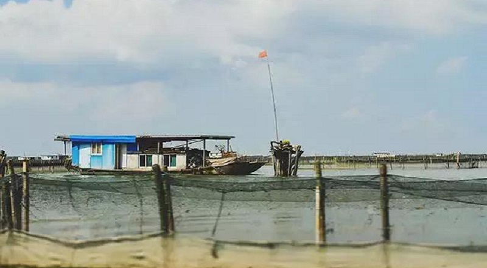
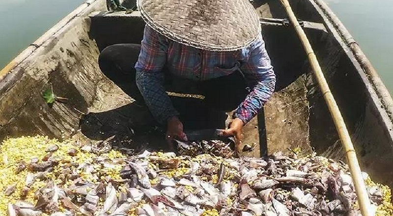
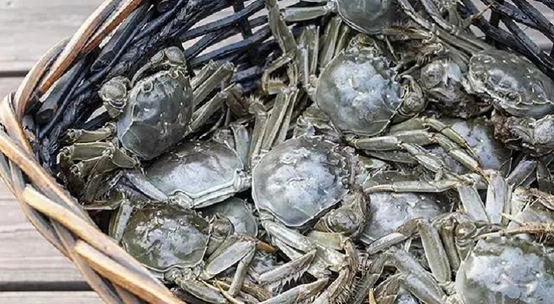

真正的阳澄湖大闸蟹都去哪儿了？
记不清从什么时候开始了，大闸蟹在每一年秋风起的时候，就会挥舞着大爪子攻陷全国人民的餐桌。
然后呢？然后你看到前仆后继面目可疑的螃蟹在湖水里洗上一个月的澡，就大大方方地报上阳澄湖大闸蟹的名帖，你学习了一堆理论套路却还是分不清舌尖上那点微妙的区别……大闸蟹似乎变成了“大杂蟹”。
阳澄湖大闸蟹早在夏禹治水时期，已有巴解利用以火光诱蟹，成为天下第一食蟹人的传说，但由于历史跨度大，其真实性有待考究（夏禹期间的事情，我真滴不知道，有待考究~~）
我从小在阳澄湖长大，几乎是吃着大闸蟹长大的。
92年政府为这里的渔民分配了水域，那时候我才4岁，家里只有一艘捕鱼用的小船，住的是自己在岸边搭出来的茅草屋。一到下雨天，家里各种锅碗瓢盆都得端出来接屋顶上漏下来的水。
后来家里花了很多钱，买下一艘船，养起了大闸蟹。
其实，我特别想告诉你，真正的阳澄湖大闸蟹到底是怎么养出来的。
这些小家伙很娇贵的，喜欢吃荤，每天凌晨3点多，老爸就跑到早市去买海带鱼，跟玉米混合在一起，“做”成螃蟹小主的豪华套餐。
鱼膘不剪断，带鱼浮在湖面上沉不下去，蟹蟹们就只能在湖底干瞪眼。所以，700斤海带鱼，老妈就得手工剪成一段一段。
从小我就知道，养螃蟹，真不是只给它们吃好那么简单。还得让蟹住好，每隔一月半月，爸妈就会重新围网投放水草，开着船到别的水域里卷，卷不到就买，一船水草，几百块。
光丢水草还行，长不住。要把先前准备好的竹子运上船，一根根对准丢水草的地方打好桩，就跟陆地上盖房子一样，给蟹蟹们搭好一个水宫殿，它们才能心情很好地蜕壳。
“你们这蟹喂过激素喂过药吗？”外地游客来了，老爱问老爸这样的问题。可是哪能啊，阳澄湖那么大，激素和药往里一撒，什么都没了。
让诚实的人得到收获，让舌尖上的美味不死。